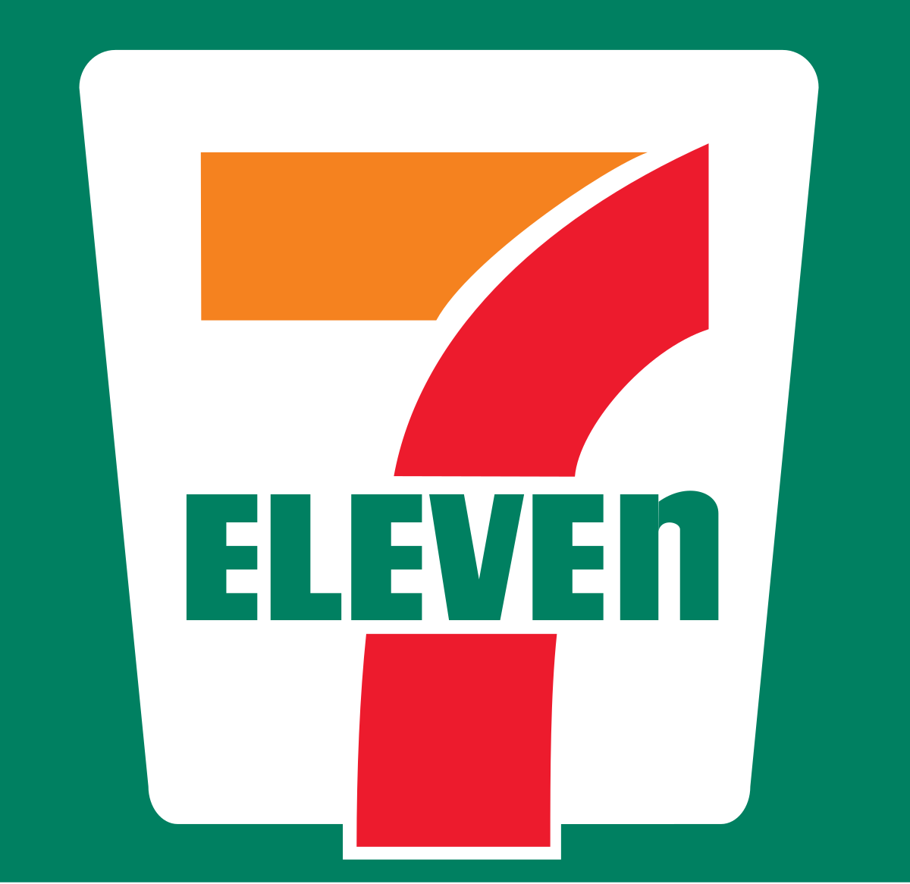

Frutas e verduras
Itens disponíveis

Banana
Descrição: Banana madura e pronta para consumo imediato. Uma delícia!
Preço: R$ 3,00
Alface
Descrição: Alface fresca, crocante e ideal para saladas.
Preço: R$ 2,50
Abacaxi
Descrição: Abacaxi doce, suculento e perfeito para sobremesas ou sucos.
Preço: R$ 5,00